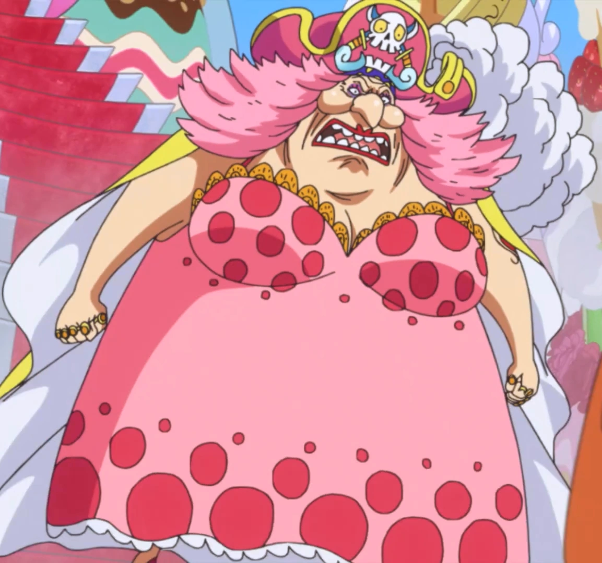
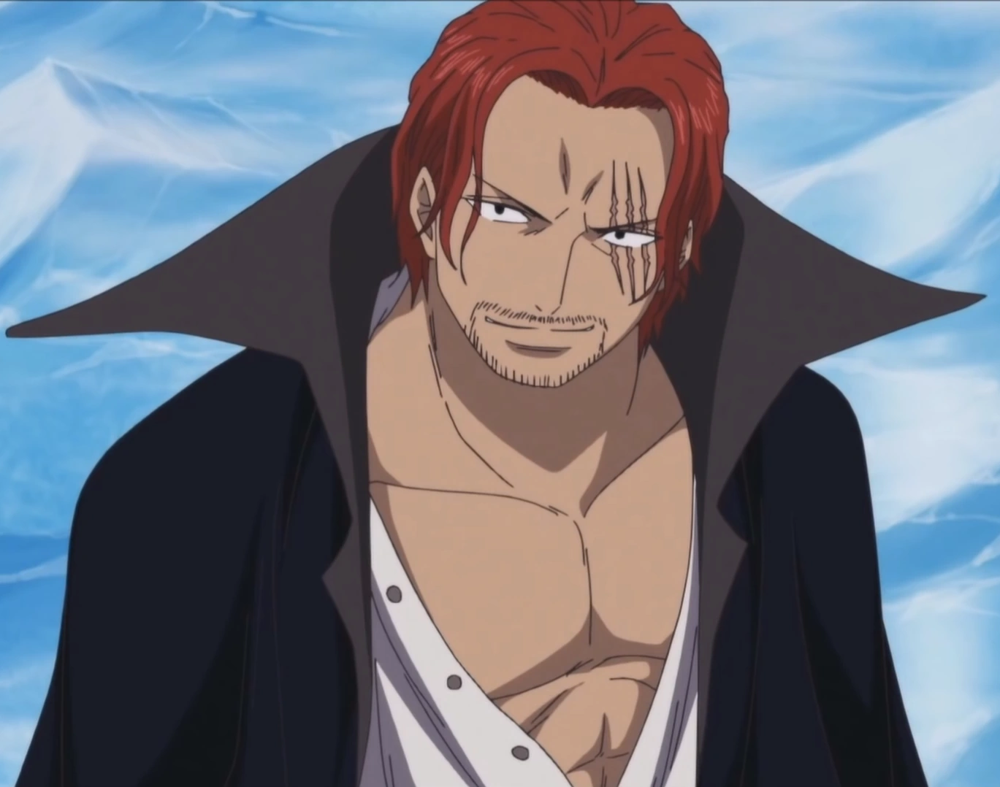

""Os cães que fogem para lamber suas feridas não têm o direito de falar de justiça.""
Barba Negra
"Se você quer chegar no topo irá encontrar lutas que não se ganha apenas com músculos!"
Doflamingo
""Crianças que não sabem o que é paz.... Crianças que nunca viram uma guerra... seus valores são completamente diferentes. Quem quer que esteja no topo pode decidir o que é certo e o que é errado!"" -
ㅤMorgan
Capitão Morgan, o autoritário comandante naval que fez sua aparição inicial nas primeiras sagas de One Piece, na Ilha de Shell, é um personagem que simboliza os desafios iniciais enfrentados pelos Chapéu de Palha. Sua crueldade e abuso de poder destacaram a necessidade de Luffy e Zoro intervir para proteger a população local. Morgan buscava silenciar qualquer resistência, mas sua tirania encontrou um fim nas mãos dos futuros membros da tripulação dos Chapéu de Palha.
A derrota de Capitão Morgan não apenas solidificou a reputação de Luffy e Zoro como piratas destemidos, mas também marcou o início de uma série de confrontos que moldariam o curso da história. Esse episódio foi essencial para o desenvolvimento dos Chapéu de Palha, pois estabeleceu o tom para futuros embates contra autoridades opressoras.
Ao longo da série, personagens como Capitão Morgan servem como pontos de partida para os desafios mais amplos que os Chapéu de Palha enfrentarão. Esses confrontos não são apenas físicos, mas também simbólicos, representando a luta contínua contra a injustiça e a busca pela liberdade.
Embora a história de Capitão Morgan seja relativamente breve, sua presença é significativa. Ele desempenha o papel de um antagonista inicial que prepara o terreno para as aventuras e desafios mais complexos que os Chapéu de Palha enfrentarão ao longo de sua jornada pelos mares.
A saga na Ilha de Shell é uma reminiscência das raízes do mundo de One Piece, onde a busca por liberdade e justiça estava apenas começando. Capitão Morgan, com seu estilo autoritário e arrogante, representou uma força opressora que precisava ser derrotada para permitir que a promessa de liberdade e aventura florescesse.
Em resumo, Capitão Morgan é um personagem que desempenhou um papel fundamental nas primeiras etapas de One Piece, deixando uma marca duradoura na história dos Chapéu de Palha. Sua derrota não apenas libertou a Ilha de Shell da opressão, mas também definiu o tom para a resistência persistente que os Chapéu de Palha ofereceriam contra qualquer forma de tirania ao longo de sua jornada pelos mares tumultuados.
ㅤBuggy
Buggy, o Palhaço Estelar, é um personagem emblemático e cômico em One Piece, criado por Eiichiro Oda. Sua introdução ocorre nas primeiras sagas da série, tornando-se um dos primeiros antagonistas enfrentados por Luffy e seus companheiros.
Buggy é conhecido por sua personalidade extravagante, ego inflado e pela habilidade de consumir a Fruta Bara Bara, que lhe concede o poder de dividir seu corpo em partes flutuantes. Esse poder o torna imune a ataques físicos diretos, o que contribui para situações cômicas e complicadas durante os confrontos.
Sua história começa na saga da Ilha Orange, onde ele é apresentado como um dos membros principais da tripulação de Gol D. Roger, o antigo Rei dos Piratas. Buggy inicialmente nutre ambições de grandeza e deseja encontrar o One Piece, mas suas ambições são adiadas por Luffy e sua tripulação.
Apesar de ser inicialmente retratado como um vilão, Buggy passa por uma notável transformação ao longo da série. Ele se torna um personagem recorrente, encontrando-se em situações inusitadas e formando alianças improváveis. Sua comédia centrada em torno de sua personalidade egocêntrica e das situações hilárias em que se encontra o tornam um favorito entre os fãs.
Buggy também desempenha um papel importante em eventos significativos, como a execução de Portgas D. Ace em Marineford, onde sua participação inesperada adiciona um elemento de surpresa à narrativa.
O design de Buggy é distintivo, com seu nariz vermelho, roupas de palhaço e a cicatriz em forma de X no rosto. Esses elementos contribuem para sua imagem memorável e sua aparência cômica.
Em resumo, Buggy é um personagem que evolui de um antagonista inicial para um elemento cômico e surpreendentemente relevante na narrativa de One Piece. Sua presença contínua na série destaca a habilidade de Oda de transformar até mesmo personagens secundários em figuras cativantes e importantes na épica jornada dos Chapéu de Palha.
ㅤKuro
Capitão Kuro, também conhecido como "Kuro das Mil Planos", é um personagem introduzido nas primeiras sagas de One Piece, especificamente na saga da Vila Syrup. Criado por Eiichiro Oda, Kuro é um dos primeiros antagonistas enfrentados por Luffy e sua tripulação.
A história de Kuro começa quando ele assume a identidade de "Klahadore", o mordomo da mansão de Kaya na Vila Syrup. Esse disfarce é parte de seu plano elaborado para herdar a fortuna da família de Kaya. Kuro é habilidoso em estratégias e táticas, o que lhe rendeu a alcunha de "Kuro das Mil Planos".
Sua ambição é abandonar a vida de pirataria e viver uma vida tranquila e rica após assassinar Kaya e herdar sua fortuna. Ele lidera uma tripulação chamada "Piratas Gato Negro" para executar seu plano, e a narrativa se desenrola com Luffy e seus amigos tentando impedir esse nefasto esquema.
A habilidade de Kuro, conhecida como "Soru Soru no Mi", não se trata de uma Akuma no Mi convencional, mas sim de um plano engenhoso e elaborado que envolve manipulação e dissimulação. Ele é um estrategista astuto e um espadachim habilidoso.
A saga de Kuro destaca a capacidade de Oda de criar vilões com motivações complexas e métodos engenhosos. Apesar de suas habilidades formidáveis, Kuro é eventualmente derrotado por Luffy e sua tripulação, marcando um dos primeiros triunfos dos Chapéu de Palha sobre um vilão em sua jornada.
O design de Kuro é notável, com seu visual elegante, óculos escuros e uma característica cicatriz no rosto. Esses elementos contribuem para a imagem de um vilão astuto e calculista.
Em resumo, Capitão Kuro é um antagonista marcante nas primeiras sagas de One Piece, oferecendo um desafio inicial aos Chapéu de Palha. Sua história destaca a diversidade de inimigos que os protagonistas encontrarão em sua jornada, ao mesmo tempo em que demonstra a habilidade de Oda em criar personagens com motivações intrigantes e planos elaborados.
ㅤKrieg
Capitão Don Krieg é um poderoso pirata introduzido nas primeiras sagas de One Piece, especificamente durante a saga do Baratie. Criado por Eiichiro Oda, Krieg é retratado como um antagonista formidável e implacável, liderando os Piratas Krieg e buscando conquistar os mares Grand Line.
A história de Don Krieg começa quando ele ataca o restaurante flutuante Baratie em busca de suprimentos e recursos. Sua tripulação é composta por piratas cruéis e poderosos, e Krieg se destaca como um estrategista astuto, utilizando armas avançadas e táticas brutais para alcançar seus objetivos.
A batalha entre os Chapéu de Palha, especialmente Sanji, e Don Krieg na Ilha Baratie é um dos primeiros confrontos significativos que a tripulação enfrenta após a saída da Vila Syrup. Krieg é introduzido como um desafio formidável, com uma armadura impenetrável e uma quantidade impressionante de armas em seu arsenal.
A saga de Don Krieg destaca a brutalidade e a ganância desse pirata, que está disposto a sacrificar seus próprios subordinados para alcançar seus objetivos. Sua derrota nas mãos dos Chapéu de Palha evidencia a resiliência e a força crescente da tripulação de Luffy.
O design de Don Krieg é notável, com uma armadura maciça e um elmo adornado com chifres. Essa aparência imponente contribui para a imagem intimidadora do pirata. Sua personalidade é retratada como calculista e impiedosa, tornando-o um adversário memorável nos primeiros arcos da história.
Em resumo, Don Krieg é um pirata formidável que fornece um desafio substancial para os Chapéu de Palha no início de sua jornada. Sua saga destaca a diversidade de ameaças que a tripulação enfrentará ao longo de sua busca pelo One Piece, além de demonstrar a progressão contínua da força e habilidade dos protagonistas em enfrentar adversários cada vez mais poderosos.
ㅤArlong
Arlong, o líder dos Piratas do Arlong, é um dos antagonistas marcantes na primeira metade de One Piece. Criado por Eiichiro Oda, Arlong é um tritão poderoso que comanda uma tripulação de tritões e sereias, estabelecendo-se como uma ameaça para a Ilha dos Tritões e, posteriormente, para a Vila Cocoyasi e Nami.
Arlong é introduzido durante a saga da Vila Cocoyasi, quando os Chapéu de Palha chegam à ilha e descobrem a terrível verdade sobre o passado de Nami. Ele é retratado como um antagonista cruel, calculista e impiedoso, que explorou e escravizou a Vila Cocoyasi para satisfazer suas próprias ambições.
Arlong é conhecido por suas habilidades de luta formidáveis, que são ampliadas pela força física dos tritões. Além disso, ele é um mestre na utilização de armas, como a Kiribachi, uma espécie de machado tridente gigante.
A saga de Arlong destaca não apenas os desafios físicos impostos pela sua força, mas também os desafios emocionais e psicológicos enfrentados pelos Chapéu de Palha, especialmente Nami. A busca de Nami por vingança contra Arlong e sua libertação emocional são elementos-chave dessa narrativa envolvente.
A derrota de Arlong pelos Chapéu de Palha, especialmente pela determinação de Luffy e pela engenhosidade de Usopp, é um dos momentos cruciais na história. Essa vitória simboliza não apenas a força física da tripulação, mas também a força de seus laços e a firmeza de seus princípios.
O design de Arlong é distintivo, com características de tritão, como barbatanas e presas afiadas. Sua aparência feroz complementa sua personalidade autoritária e dominante.
Em resumo, Arlong é um dos vilões inesquecíveis em One Piece, cuja saga ressoa não apenas pela ameaça física que ele representa, mas também pelos aspectos emocionais e de desenvolvimento de personagens associados à história da Vila Cocoyasi. A derrota de Arlong marca um momento significativo na jornada dos Chapéu de Palha, solidificando sua determinação em enfrentar desafios cada vez maiores em sua busca pelo One Piece.
ㅤWapol
Wapol, o excêntrico rei de Drum Island, é um personagem peculiar em One Piece, criado por Eiichiro Oda. Ele é introduzido durante a saga de Drum Island, onde desempenha o papel de antagonista e governante tirano da ilha.
Wapol é conhecido por sua natureza egoísta, falta de empatia e por governar Drum Island apenas para satisfazer seus próprios desejos e luxos. Ele é o criador da "Bliking Kingdom" (Reino do Banquete), um reino onde sua vontade é a única lei. Seu comportamento tirânico leva à opressão da população e à exploração dos recursos da ilha para seu próprio benefício.
Um dos elementos mais distintivos de Wapol é o fato de ele ser usuário da Fruta do Diabo "Munch-Munch", que lhe permite comer qualquer coisa e se transformar nela. Essa habilidade estranha adiciona um toque de comédia à sua presença, apesar de suas ações negativas.
A história de Wapol atinge um ponto crítico quando ele é confrontado por Luffy e seus companheiros na luta para salvar Nami, que está gravemente doente. A batalha resulta na derrota de Wapol e na libertação de Drum Island do seu governo opressor.
Após esses eventos, Wapol reaparece como um personagem cômico em outros arcos de One Piece. Ele estabelece a "Wapol's Metalworks," uma empresa de produção de brinquedos feitos de aço, e acaba se tornando um Shichibukai, uma posição que confere certa legitimidade e privilégios a piratas reconhecidos pelo Governo Mundial.
O design de Wapol é notável por sua aparência extravagante, com uma coroa e roupas reais exageradas que enfatizam sua personalidade egocêntrica e extravagante.
Em resumo, Wapol é um personagem que representa a diversidade de antagonistas encontrados em One Piece. Sua saga destaca a capacidade de Oda de misturar elementos sérios e cômicos na narrativa, proporcionando um desenvolvimento interessante para um personagem inicialmente apresentado como um vilão e, posteriormente, explorando sua transformação em uma figura mais cômica e empresarial no mundo de One Piece.
ㅤCrocodile
Sir Crocodile, também conhecido como Sr. 0, é um dos antagonistas mais formidáveis e icônicos em One Piece. Criado por Eiichiro Oda, Crocodile é introduzido durante a saga de Alabasta, onde desempenha o papel de um dos Sete Corsários e governante oculto da organização Baroque Works.
A história de Crocodile é complexa e envolvente. Inicialmente, ele é retratado como o governante benevolente de Alabasta, mas, na verdade, ele manipula os eventos por trás das cortinas para instigar conflitos e tomar o poder. Seu objetivo é encontrar o Pluton, uma arma antiga, e usá-la para alcançar seus próprios fins.
Crocodile é usuário da poderosa Akuma no Mi chamada "Sun-Sun Fruit" (Sunan Sunan no Mi), que lhe concede a capacidade de controlar e transformar qualquer objeto em areia. Essa habilidade, juntamente com sua astúcia e experiência em combate, o torna um adversário incrivelmente perigoso.
A saga de Alabasta destaca o conflito épico entre Crocodile e os Chapéu de Palha, especialmente Monkey D. Luffy. A luta final entre Luffy e Crocodile é um dos momentos mais intensos e emocionantes da série, mostrando a resiliência do protagonista diante de um oponente tão formidável.
Após sua derrota em Alabasta, Crocodile reaparece em sagas posteriores, mostrando uma complexidade maior em sua personalidade. Ele se torna uma figura ambígua, às vezes colaborando com os Chapéu de Palha em situações específicas, o que destaca a natureza fluida das alianças em One Piece.
O design de Crocodile é notável, com seu visual elegante e seu gancho dourado em lugar da mão direita, que é uma das características mais distintivas do personagem. Esses elementos contribuem para a sua imagem imponente e misteriosa.
Em resumo, Sir Crocodile é um vilão cativante em One Piece, cuja saga em Alabasta é marcada por traições, reviravoltas e batalhas intensas. Sua presença na série vai além da saga inicial, adicionando camadas intrigantes à narrativa e demonstrando a habilidade de Oda em desenvolver personagens complexos ao longo da épica jornada dos Chapéu de Palha.
ㅤEnel
Enel, o autoproclamado "Deus" do Céu e usuário da Akuma no Mi "Goro Goro no Mi", é um dos antagonistas mais extraordinários e poderosos em One Piece. Criado por Eiichiro Oda, Enel é introduzido durante a saga de Skypiea, quando os Chapéu de Palha chegam à Sky Island.
A história de Enel destaca-se por sua busca pela cidade celestial de Birka, uma antiga cidade flutuante que ele acredita ser o verdadeiro lar dos deuses. Ele planeja usar o poder destrutivo de sua Akuma no Mi para "purificar" Skypiea e, assim, criar seu reino divino.
A habilidade de Enel em controlar e manipular o trovão, bem como sua capacidade de ouvir eletromagneticamente todos os sons em Skypiea, tornam-no um adversário extremamente desafiador. Ele se autoproclama um deus devido à sua imperturbável crença em sua própria divindade.
A saga de Skypiea culmina em uma batalha épica entre Enel e Luffy. A capacidade de Luffy de utilizar o Haki do Rei se revela vital para superar a aparente invulnerabilidade de Enel à maioria dos ataques físicos. Essa batalha é um dos momentos mais emocionantes e estratégicos em One Piece, destacando a criatividade e a resiliência dos Chapéu de Palha diante de desafios extraordinários.
Após a saga de Skypiea, Enel não é mais um foco principal na história, mas é visto novamente em uma minissérie chamada "One Piece: Enel's Great Space Operations". Nessa minissérie, ele viaja para o espaço em um navio espacial que ele mesmo construiu, explorando os mistérios do universo.
O design de Enel é marcante, com seu traje peculiar e a expressão serena que contrasta com sua natureza implacável. A aparência de Enel, juntamente com sua personalidade egocêntrica e desapegada, faz dele um dos personagens mais memoráveis de One Piece.
Em resumo, Enel é um vilão fascinante que trouxe um elemento único e celestial à história de One Piece. Sua busca por divindade e seu confronto com os Chapéu de Palha em Skypiea destacam-se como uma das sagas mais visualmente impressionantes e emocionantes da série.
ㅤFoxy
Capitão Foxy é um pirata e usuário da Akuma no Mi "Noru Noru no Mi", que lhe concede a capacidade de criar campos de força que aceleram ou retardam objetos. Ele é introduzido na saga "Long Ring Long Land" em One Piece, onde se torna um dos antagonistas temporários e líder dos Foxy Pirates.
Foxy é conhecido por sua personalidade descontraída e sua paixão por corridas e jogos. Sua tripulação é especializada em desafios competitivos, e eles são responsáveis pelo Davy Back Fight, um jogo pirata que envolve competições e apostas, incluindo a troca temporária de membros de tripulação.
A história de Foxy destaca-se pela comédia e pelo tom mais leve, em comparação com alguns arcos mais intensos de One Piece. Seus métodos de combate únicos, usando a Noru Noru no Mi para manipular o tempo em corridas e desafios, proporcionam situações inusitadas e engraçadas.
A saga de Foxy inclui a participação dos Chapéu de Palha em várias competições, culminando em uma batalha entre Luffy e Foxy. Através de sua astúcia e habilidades estratégicas, Luffy consegue superar os truques de Foxy e garantir a vitória dos Chapéu de Palha.
Apesar de ser um adversário temporário, Foxy e sua tripulação reaparecem mais tarde na história, tornando-se personagens recorrentes em algumas minisséries e especiais. Sua presença continua a fornecer momentos cômicos e situações inusitadas, destacando a capacidade de Oda de equilibrar diferentes tons na narrativa de One Piece.
O design de Foxy é caracterizado por suas roupas extravagantes, incluindo um traje roxo e branco, e uma risada distintiva. Esses elementos contribuem para sua imagem de personagem excêntrico e engraçado.
Em resumo, Capitão Foxy é um personagem que adiciona um toque de comédia e entretenimento à história de One Piece. Sua saga destaca a diversidade de desafios enfrentados pelos Chapéu de Palha, desde confrontos épicos até jogos e competições inusitadas. Foxy permanece como uma figura memorável na galeria de personagens da série, acrescentando um elemento de diversão e descontração aos tumultuados mares Grand Line.
ㅤRob Lucci
Rob Lucci é um personagem notável em One Piece, apresentado durante a saga "Water 7" e a subsequente saga "Enies Lobby". Ele é um ex-agente do CP9, a divisão de assassinato secreta do Governo Mundial. Criado por Eiichiro Oda, Lucci é um dos antagonistas mais formidáveis e memoráveis da série.
Lucci é conhecido por sua extrema habilidade em combate, sendo um mestre em Rokushiki, um conjunto avançado de técnicas de artes marciais que inclui habilidades como Soru, Tekkai, Rankyaku, Geppo, Shigan e Kami-e. Essas habilidades o tornam um oponente mortal e um dos assassinos mais habilidosos do mundo de One Piece.
Sua história é intrinsecamente ligada à saga de Water 7 e Enies Lobby, onde o CP9 é enviado para capturar Nico Robin, membro dos Chapéu de Palha. Lucci é designado como o líder da missão e, ao longo da narrativa, sua relação com Robin e seu passado são revelados.
A luta entre Lucci e Monkey D. Luffy durante a saga de Enies Lobby é uma das batalhas mais intensas e emocionantes da série. Luffy enfrenta Lucci após uma série de eventos dramáticos, e a batalha demonstra não apenas a força física de ambos, mas também a determinação e o crescimento de Luffy como capitão.
O design de Lucci é marcante, com sua aparência felina, cabelos longos e olhos intensos. Sua personalidade é fria e impiedosa, refletindo sua natureza como um assassino treinado.
Apesar de inicialmente ser retratado como um antagonista implacável, a história de Lucci possui camadas emocionais e complexidade. Seu papel como um agente do Governo Mundial e sua relação com Nico Robin são explorados mais profundamente, adicionando nuances à sua personalidade.
Em resumo, Rob Lucci é um dos vilões mais poderosos e intrigantes em One Piece. Sua presença na saga de Water 7 e Enies Lobby eleva o nível de intensidade na série, proporcionando não apenas batalhas épicas, mas também desenvolvimento de personagens significativo. A saga destaca a capacidade de Oda em criar antagonistas complexos que transcendem a mera vilania, tornando-se personagens memoráveis e fundamentais na jornada dos Chapéu de Palha.
ㅤGecko Moria
Gecko Moria, o capitão dos Piratas de Thriller Bark, é um personagem proeminente em One Piece, apresentado durante a saga "Thriller Bark". Criado por Eiichiro Oda, Moria é um dos Shichibukai, uma posição prestigiosa concedida pelo Governo Mundial a piratas poderosos em troca de sua cooperação.
A característica mais distintiva de Moria é o seu uso da Akuma no Mi "Kage Kage no Mi", que lhe concede o poder de manipular sombras. Ele pode arrancar as sombras das pessoas, criando criaturas chamadas "Zombies" e até mesmo aumentando seu próprio tamanho e poder com as sombras roubadas.
A história de Moria é centrada na ilha móvel de Thriller Bark, onde ele e sua tripulação, incluindo seu fiel companheiro, o gigante Bartholomew Kuma, criam um reino de horror e zumbis. Sua ambição é criar o "Ultimate Zombie" usando a sombra de um ser humano poderoso.
A batalha entre Moria e Monkey D. Luffy é um dos destaques da saga Thriller Bark. A habilidade de Moria de criar exércitos de zumbis e sua capacidade de absorver sombras para aumentar seu próprio poder tornam-no um adversário único e desafiador.
Apesar de sua posição como Shichibukai, Moria é derrotado pelos Chapéu de Palha e perde sua posição. Após esses eventos, ele reaparece em arcos posteriores da história, mostrando sua natureza persistente e sua busca por poder. Moria continua a desempenhar um papel significativo na narrativa de One Piece, especialmente durante a saga "Marineford" e a subsequente "Pós-Guerra".
O design de Moria é marcado por sua aparência esquelética, seu chapéu e sua capa característicos, contribuindo para sua imagem sombria e misteriosa.
Em resumo, Gecko Moria é um Shichibukai que trouxe uma dimensão única à história de One Piece com suas habilidades sombrias e sua presença ameaçadora. Sua saga em Thriller Bark destaca não apenas os desafios físicos que os Chapéu de Palha enfrentam, mas também a exploração do conceito de sombras e sua relação com a identidade e o poder. Moria é mais do que um mero antagonista; ele é um personagem complexo cuja influência se estende por vários arcos da série.
ㅤMagellan
Magellan é um personagem poderoso e intimidante em One Piece, apresentado durante a saga "Impel Down". Ele é o diretor-geral da prisão submarina de Impel Down e tem a responsabilidade de manter os prisioneiros mais perigosos e infames do mundo. Criado por Eiichiro Oda, Magellan é um dos antagonistas centrais durante a estadia dos Chapéu de Palha em Impel Down.
A habilidade de Magellan é derivada da Akuma no Mi chamada "Doku Doku no Mi", que lhe concede o poder de criar, controlar e até mesmo transformar-se em venenos. Seus poderes venenosos são extremamente perigosos e letais, tornando-o uma figura temida dentro e fora de Impel Down.
A história de Magellan na saga Impel Down envolve os Chapéu de Palha, especialmente Monkey D. Luffy, que tenta resgatar seu irmão, Portgas D. Ace, mantido prisioneiro em Impel Down. A presença de Magellan cria uma série de desafios formidáveis, já que sua habilidade venenosa representa uma ameaça constante para quem ousa desafiar a prisão.
A batalha entre Luffy e Magellan destaca-se como uma das lutas mais intensas e desesperadoras na série. Magellan demonstra não apenas seu poder esmagador, mas também sua inteligência tática ao usar estratégias venenosas para conter os intrusos.
Apesar de sua posição como antagonista durante Impel Down, Magellan não é retratado como um vilão unidimensional. Sua lealdade ao Governo Mundial e seu senso de responsabilidade em manter a ordem em Impel Down são aspectos que adicionam complexidade ao seu personagem.
O design de Magellan é marcado por sua aparência sombria e sua pele azulada, complementada por um traje característico de diretor de prisão.
Em resumo, Magellan é um antagonista formidável que desempenha um papel crucial na saga Impel Down, proporcionando uma série de desafios únicos para os Chapéu de Palha. Sua presença destaca não apenas a diversidade de habilidades das Akuma no Mi em One Piece, mas também a profundidade dos personagens e a complexidade das situações enfrentadas pelos protagonistas em sua busca pelo One Piece.
ㅤAkainu
Akainu, cujo verdadeiro nome é Sakazuki, é um dos almirantes da Marinha no mundo de One Piece e um personagem extremamente poderoso e controverso. Ele é introduzido durante a saga "Paramount War" (também conhecida como a Guerra de Marineford) e desempenha um papel fundamental nos eventos que se desenrolam nessa saga. Criado por Eiichiro Oda, Akainu é um dos antagonistas mais marcantes na série.
Sakazuki é conhecido por sua postura absolutamente implacável em relação à justiça. Ele é o usuário da Akuma no Mi "Magu Magu no Mi", que lhe concede o poder de criar, controlar e se transformar em magma. Sua habilidade é uma das mais devastadoras e letais entre os usuários de Akuma no Mi na série.
O momento mais icônico e controverso envolvendo Akainu ocorre durante a Guerra de Marineford. Em uma situação de grande tumulto, ele mata um dos personagens principais da série, Portgas D. Ace, irmão de Monkey D. Luffy. Esse evento tem implicações profundas na história e deixa uma marca duradoura no desenvolvimento de Luffy como personagem.
A filosofia de Akainu é representada pela "Justiça Absoluta", onde ele acredita que qualquer comprometimento com a justiça é inaceitável, mesmo que isso signifique sacrificar vidas inocentes. Essa mentalidade o coloca em desacordo com outros personagens, incluindo outros altos oficiais da Marinha.
O design de Akainu é distintivo, com uma aparência imponente, cabelos vermelhos e uma cicatriz que atravessa seu olho esquerdo. Essa cicatriz é resultado de um confronto anterior com o almirante Aokiji, evidenciando a intensidade de seus confrontos.
Akainu se torna o Almirante da Frota e o novo Almirante da Marinha após a Guerra de Marineford, continuando a desempenhar um papel significativo em eventos posteriores, incluindo os eventos do arco "Pós-Guerra" e "Dressrosa".
Em resumo, Akainu é um dos antagonistas mais marcantes em One Piece, destacando-se pela sua ideologia implacável, poder avassalador e pelo impacto emocional de suas ações na narrativa. Sua presença continua a moldar o mundo de One Piece e a apresentar dilemas morais complexos para os personagens principais e para os leitores.
ㅤHody Jones
Hody Jones é um dos antagonistas principais na saga "Ilha dos Tritões" em One Piece. Ele é introduzido como o líder dos Novos Piratas Homens-Peixe e desempenha um papel crucial na narrativa que explora temas de preconceito, vingança e as complexidades das relações entre humanos e tritões. Criado por Eiichiro Oda, Hody Jones é um personagem que destaca as tensões existentes entre as diferentes raças no mundo de One Piece.
A história de Hody Jones começa quando ele é apresentado como um tritão radicalizado e extremista, que nutre ódio profundo pelos humanos devido às atrocidades cometidas contra os tritões no passado. Sua ambição é exterminar os humanos e, para isso, forma uma nova tripulação de piratas tritões que compartilham de sua ideologia.
Hody, através do consumo da droga esteróide "Energy Steroid," adquire uma força sobre-humana, tornando-se uma ameaça significativa para a ilha dos tritões. Ele manipula os eventos de forma a incitar conflitos entre humanos e tritões, alimentando seu desejo de vingança.
A saga da Ilha dos Tritões culmina em uma confrontação épica entre Hody Jones e os Chapéu de Palha. Durante a batalha, é revelado que Hody foi vítima do ódio e preconceito humano quando criança, mas sua resposta ao trauma foi buscar vingança em vez de buscar uma solução pacífica.
O design de Hody é notável por sua aparência de tubarão, complementada por tatuagens e cicatrizes que destacam sua natureza combativa e feroz. Sua personalidade é retratada como fanática e vingativa, mas sua história de fundo acrescenta nuances ao seu caráter.
A saga da Ilha dos Tritões, com Hody Jones como um dos principais antagonistas, oferece uma reflexão sobre os ciclos de ódio e vingança, destacando a importância do entendimento mútuo e da superação das diferenças para alcançar a paz.
Em resumo, Hody Jones é um personagem complexo que desempenha um papel significativo na exploração de temas sociais e raciais em One Piece. Sua presença na história destaca a habilidade de Oda em abordar questões sérias por meio da narrativa, proporcionando uma profundidade emocional e uma reflexão sobre as relações entre diferentes grupos no mundo fictício da série.
ㅤCaesar Clown
Caesar Clown é um personagem introduzido durante a saga "Punk Hazard" em One Piece. Ele é um cientista louco e ex-membro do Shichibukai, que se envolve em experimentos perigosos e antiéticos, muitas vezes relacionados à manipulação de gases venenosos e substâncias químicas. Criado por Eiichiro Oda, Caesar Clown desempenha o papel de um antagonista significativo durante a estadia dos Chapéu de Palha na ilha de Punk Hazard.
A habilidade de Caesar Clown é derivada da Akuma no Mi chamada "Gasu Gasu no Mi", que lhe confere o poder de criar, controlar e se transformar em gases. Essa habilidade é explorada de maneiras criativas e perigosas, alinhando-se ao seu comportamento imprudente e cruel.
A história de Caesar Clown em Punk Hazard está ligada à sua colaboração com o cientista louco Vegapunk e sua associação com Donquixote Doflamingo. Ele é responsável por vários experimentos, incluindo a criação de armas químicas e o desenvolvimento da gigantesca figura conhecida como "Smiley."
A batalha entre os Chapéu de Palha e Caesar Clown destaca não apenas a ameaça física que ele representa, mas também a necessidade de detê-lo devido às suas práticas éticas questionáveis e seus planos perigosos para a ilha.
Após a saga de Punk Hazard, Caesar Clown reaparece durante o arco "Pós-Punk Hazard" e tem sua própria minissérie chamada "Caesar's Retrieval Arc." Nessas histórias, ele é mostrado como um personagem ambíguo, às vezes colaborando com os Chapéu de Palha, mas mantendo suas próprias motivações e interesses.
O design de Caesar Clown é distintivo, com um visual que combina elementos de cientista louco e palhaço, criando uma imagem excêntrica e sinistra.
Em resumo, Caesar Clown é um antagonista que destaca a exploração de temas éticos e morais em One Piece, especialmente no que diz respeito à experimentação científica descontrolada. Sua presença na saga de Punk Hazard adiciona uma camada de complexidade à história, enquanto suas aparições posteriores mostram que, apesar de suas ações questionáveis, ele ainda pode ser um jogador relevante no mundo de One Piece.
ㅤDoflamingo
Donquixote Doflamingo, conhecido como "Joker" durante o arco "Dressrosa," é um dos antagonistas mais influentes e complexos em One Piece. Criado por Eiichiro Oda, Doflamingo desempenha papéis cruciais em diversas sagas, incluindo a "Guerra de Marineford" e "Punk Hazard". Ele é um ex-Shichibukai e ex-nobre mundial, cuja história e motivações adicionam uma camada profunda à narrativa.
A habilidade de Doflamingo é derivada da Akuma no Mi chamada "Ito Ito no Mi", que lhe confere o poder de criar e controlar fios de energia cortantes. Essa habilidade, junto com sua maestria em Haki, faz dele um adversário formidável e estratégico.
A história de Doflamingo é entrelaçada com a sua ascensão ao poder e sua queda. Ele nasceu como um nobre celestial, mas seu pai renunciou ao título, levando a sua família a ser perseguida e, finalmente, a cair na criminalidade. Doflamingo é motivado por um desejo de poder, vingança e o sonho de criar um mundo onde as pessoas possam dar vazão a seus desejos mais sombrios.
A saga de Dressrosa é focada em Doflamingo como o principal antagonista. Ele estabelece uma operação subterrânea para produzir a SMILE, uma substância que concede a habilidade de se transformar parcialmente em animais, com o objetivo de controlar os tritões, minks e humanos. A busca dos Chapéu de Palha para derrubar Doflamingo é uma das narrativas mais complexas e emocionantes da série.
A batalha final entre Doflamingo e Monkey D. Luffy destaca não apenas o combate físico, mas também as questões morais e éticas envolvidas. O papel de Doflamingo como um manipulador habilidoso, tanto politicamente quanto nas sombras, faz dele um antagonista único em One Piece.
O design de Doflamingo é marcado por sua aparência extravagante, incluindo óculos escuros, uma roupa rosa e um casaco de penas. Esses elementos contribuem para sua imagem elegante e perigosa.
Em resumo, Donquixote Doflamingo é um dos antagonistas mais intrigantes e multifacetados em One Piece. Sua presença na história não apenas desencadeia eventos significativos, mas também explora temas complexos relacionados ao poder, à vingança e à natureza da justiça. A saga de Dressrosa, centrada em Doflamingo, destaca a capacidade de Oda em criar personagens cativantes e narrativas envolventes que transcendem as fronteiras do mero antagonismo.
ㅤJack
Jack, também conhecido como "Jack, o Estripador," é um dos membros da tripulação de Kaido e um dos "Três Calamidades" em One Piece. Criado por Eiichiro Oda, Jack é introduzido durante a saga "Zou" e desempenha um papel significativo em vários arcos subsequentes, incluindo a saga "Totland" e a saga "País de Wano".
Jack é um homem-mamute, resultado do consumo da Akuma no Mi "Zou Zou no Mi, Modelo: Mamute". Sua forma híbrida combina características humanas e de mamute, conferindo-lhe uma força e resistência notáveis. Ele é conhecido por sua brutalidade, lealdade a Kaido e por ser um dos subordinados mais poderosos do Yonkou.
A saga de Zou destaca-se pela invasão de Jack à ilha-elefante Zou em busca do ninja Raizo. Durante essa invasão, Jack demonstra seu poder devastador e aparentemente indestrutível, enfrentando os guerreiros minks e causando danos significativos à ilha.
Jack também desempenha um papel crucial durante a saga "País de Wano", onde é envolvido em confrontos intensos contra os aliados dos Chapéu de Palha e outros personagens importantes. Sua persistência e habilidade em resistir a adversidades tornam-no uma ameaça constante.
O design de Jack é marcado por sua aparência imponente, com presas e características de mamute evidentes. Ele é frequentemente retratado com uma atitude impiedosa e determinação inabalável.
A relação de Jack com Kaido e sua posição entre as "Três Calamidades" destacam-no como um dos subordinados mais proeminentes do imperador dos mares. Sua presença na narrativa acrescenta complexidade aos desafios enfrentados pelos Chapéu de Palha e seus aliados.
Em resumo, Jack é um personagem poderoso e temido em One Piece, cuja introdução e participação em vários arcos contribuem para a expansão do mundo e dos desafios enfrentados pelos protagonistas. Sua natureza implacável e suas habilidades únicas o tornam um dos antagonistas mais formidáveis na história recente da série.

ㅤBig Mom
Charlotte Linlin, mais conhecida como Big Mom, é uma das Yonkou, os quatro imperadores mais poderosos do mundo, em One Piece. Criada por Eiichiro Oda, Big Mom é uma figura imponente e temida, líder da Família Charlotte e governante da ilha Whole Cake, onde estabeleceu o País de Totland. Sua presença é central nas sagas "Ilha Whole Cake" e "País de Wano".
Big Mom é uma usuária da Akuma no Mi chamada "Soru Soru no Mi", que lhe confere a capacidade de manipular almas. Ela pode retirar almas das pessoas, armazená-las em objetos e usá-las para diferentes propósitos, incluindo a criação de homies, seres vivos animados a partir das almas.
A saga de Ilha Whole Cake é centrada na missão dos Chapéu de Palha para resgatar Sanji e escapar da ilha controlada por Big Mom. Durante essa saga, a complexidade da personalidade de Big Mom é explorada, revelando sua voracidade por doces, suas ambições em criar uma utopia para todas as raças e sua mentalidade imprevisível.
O design de Big Mom é caracterizado por sua estatura colossal, seu vestido extravagante e sua aparência assustadora. Seu visual, juntamente com sua natureza imprevisível, a torna uma figura única e memorável em One Piece.
Além de sua presença dominante na saga de Ilha Whole Cake, Big Mom também desempenha um papel importante na saga de País de Wano. Sua aliança com Kaido e sua busca pelo Poneglyph - pedra que contém informações sobre a localização de Raftel, a ilha final da Grande Rota - fazem dela uma força formidável no mundo de One Piece.
A história de Big Mom destaca a complexidade dos Yonkou, mostrando que eles não são apenas vilões unidimensionais, mas líderes poderosos com motivações próprias e histórias de fundo fascinantes.
Em resumo, Big Mom é uma das figuras mais marcantes e poderosas em One Piece. Sua presença influencia diretamente os eventos nas sagas de Ilha Whole Cake e País de Wano, e sua habilidade única e personalidade imprevisível contribuem para a riqueza do mundo fictício criado por Eiichiro Oda.
ㅤOrochi
Kurozumi Orochi, também conhecido como o Xogum Orochi, é um personagem introduzido durante a saga "País de Wano" em One Piece. Criado por Eiichiro Oda, Orochi é o atual Xogum de Wano e um dos antagonistas principais nesta saga.
Orochi é caracterizado por sua aparência serpentina, incluindo várias cabeças e um corpo longo. Essa característica é uma referência à lenda japonesa da hidra de Yamata no Orochi, que tem oito cabeças e oito caudas. Essa escolha de design destaca a influência cultural japonesa na narrativa de One Piece.
O Xogum Orochi governa Wano de maneira opressiva, colaborando com o Yonkou Kaido para manter o controle sobre o país. Ele usurpou o trono de Oden Kozuki com a ajuda de Kanjuro, um traidor da Família Kozuki. Desde então, Orochi governa Wano de maneira tirânica, impondo altos impostos sobre a população e colaborando com a fabricação de SMILEs, uma substância que concede poderes animais.
Orochi é mostrado como um líder cruel e astuto, utilizando métodos brutais para manter seu domínio e eliminar qualquer forma de resistência. Ele mantém uma aliança com Kaido e os Piratas das Feras, garantindo o controle total sobre Wano.
Ao longo da saga de País de Wano, a verdadeira natureza de Orochi e suas ligações com os eventos passados de Wano são exploradas. Sua participação na execução de Oden Kozuki e seu papel nas tragédias que se desenrolaram ao longo dos anos são revelados, aprofundando sua posição como um vilão na narrativa.
O combate entre Orochi e os aliados dos Chapéu de Palha é uma parte central da saga de País de Wano, representando uma tentativa de derrubar o regime opressivo que governa Wano há muito tempo.
Em resumo, o Xogum Orochi é um personagem que desempenha um papel central na saga de País de Wano, sendo um líder opressivo que colabora com outros vilões poderosos para manter o controle sobre Wano. Sua presença destaca a importância do contexto cultural japonês na criação do mundo de One Piece, ao mesmo tempo em que contribui para a complexidade dos antagonistas na série.
ㅤKaido
Kaido, também conhecido como "Kaido das Cem Feras", é um dos Yonkou em One Piece, figurando entre os quatro piratas mais poderosos do mundo. Criado por Eiichiro Oda, Kaido é conhecido por sua busca incansável pela morte e sua obsessão por criar o "Mundo do Inferno". Sua presença é central nas sagas "País de Wano" e "Ilha Onigashima".
Kaido é um dos personagens mais imponentes e formidáveis da série. Ele é o capitão dos Piratas das Feras, uma tripulação conhecida por suas práticas cruéis e sua aliança com os Piratas do Big Mom. Sua força e resistência são lendárias, e ele é amplamente considerado indestrutível.
A busca de Kaido pela morte o leva a procurar desafios cada vez mais extremos. Ele se joga de alturas imensas e enfrenta situações perigosas na tentativa de encontrar algo que possa finalmente levá-lo à morte. Essa característica única o distingue de outros personagens em One Piece.
Durante a saga de País de Wano, Kaido se torna um dos principais antagonistas, com a ilha Onigashima como palco de confrontos épicos entre os Chapéu de Palha, aliados e as forças de Kaido. Sua ligação com a Família Kozuki, os Poneglyphs e a história de Wano adicionam camadas de complexidade à narrativa.
Kaido é um usuário da Akuma no Mi "Uo Uo no Mi, Modelo: Dragão", que lhe confere a capacidade de se transformar em um dragão. Essa habilidade, combinada com sua resistência sobrenatural, o torna um adversário virtualmente invencível.
O design de Kaido é marcado por sua aparência robusta, com tatuagens tribais e cicatrizes, transmitindo uma sensação de ferocidade e poder. Ele também é frequentemente visto vestindo um casaco longo e carregando sua clava, chamada Kanabo.
A história de Kaido e seu papel como um dos Yonkou destaca a escala épica da série One Piece e a complexidade dos personagens que moldam o mundo fictício criado por Oda. Sua presença imponente e sua busca singular fazem dele um dos antagonistas mais intrigantes e formidáveis na história da série.
ㅤMarshall D. Teach (Barba Negra)
Marshall D. Teach, mais conhecido como Barba Negra, é um dos personagens mais notáveis e intrigantes em One Piece. Ele é introduzido como um dos membros da tripulação de Barba Branca e, ao longo da história, torna-se um dos Yonkou, os quatro piratas mais poderosos do mundo. Criado por Eiichiro Oda, Barba Negra desempenha um papel crucial nas sagas "Impel Down" e "Guerra de Marineford" e se torna um dos antagonistas principais da série.
O poder de Barba Negra é notável por sua capacidade única de consumir múltiplas Akuma no Mi. Ele inicialmente adquire a Yami Yami no Mi, uma fruta do diabo que lhe confere a habilidade de controlar, absorver e anular outras Akuma no Mi. Mais tarde, durante a Guerra de Marineford, ele também consome a Gura Gura no Mi, uma das Akuma no Mi mais poderosas que permite controlar as ondas sísmicas.
A traição de Barba Negra contra Barba Branca durante a Guerra de Marineford é um ponto de virada significativo na narrativa. Ele revela suas ambições de se tornar o Rei dos Piratas e é motivado por um desejo de adquirir poder, mesmo que isso signifique trair antigos aliados.
Após a guerra, Barba Negra continua sua ascensão ao poder. Ele estabelece sua própria tripulação, os Piratas do Barba Negra, e parte para o Novo Mundo para alcançar seus objetivos ambiciosos. Sua busca pela conquista e aquisição de poder são características distintivas de sua personalidade.
O design de Barba Negra é marcado por sua figura imponente, barba longa e a inclusão de uma tatuagem em forma de caveira em seu rosto. Sua presença é frequentemente acompanhada por uma atmosfera sombria e ameaçadora.
A história de Barba Negra destaca a complexidade dos personagens em One Piece e a natureza mutável do mundo dos piratas. Sua habilidade única, motivações ambiciosas e papel como um dos principais antagonistas contribuem para a riqueza da narrativa e para o desenvolvimento do universo de One Piece.

ㅤShanks
Shanks, também conhecido como Shanks, o Ruivo, é um dos personagens mais respeitados e influentes em One Piece. Ele é apresentado como um dos Yonkou, os quatro piratas mais poderosos do mundo, e é o capitão dos Piratas do Ruivo. Criado por Eiichiro Oda, Shanks desempenha um papel significativo na narrativa, influenciando tanto os eventos passados quanto os futuros na série.
Shanks é conhecido por sua personalidade calma, sábia e carismática. Ele é um pirata notável que prioriza a honra, a lealdade e a proteção daqueles que são importantes para ele. Sua presença é respeitada não apenas entre os piratas, mas também pela Marinha e pelo Governo Mundial.
A história de Shanks começa com sua introdução como membro da tripulação do Pirata Gol D. Roger, o antigo Rei dos Piratas. Shanks também foi o mentor do protagonista Monkey D. Luffy, dando a ele o famoso chapéu de palha que se tornou o símbolo da tripulação de Luffy.
Um dos momentos mais icônicos de Shanks ocorre no início da série, quando ele sacrifica seu braço para salvar Luffy de um monstro marinho. Esse ato de coragem e sacrifício deixa uma impressão duradoura em Luffy e define a relação entre os dois personagens.
A influência de Shanks na história de One Piece é ampliada pela importância do Poneglyph vermelho, que ele possui e que contém informações cruciais sobre a localização de Raftel, a ilha final da Grande Rota.
O design de Shanks é distintivo, com seu cabelo ruivo, cicatriz no olho esquerdo e seu estilo casual, incluindo um braço faltando após o incidente com o monstro marinho.
Embora Shanks não seja um antagonista direto, sua presença e influência na narrativa sugerem que ele tem um papel crucial a desempenhar no desenrolar dos eventos finais da história de One Piece. Ele é um personagem misterioso que continua a cativar os fãs e a adicionar camadas de mistério e antecipação à série.